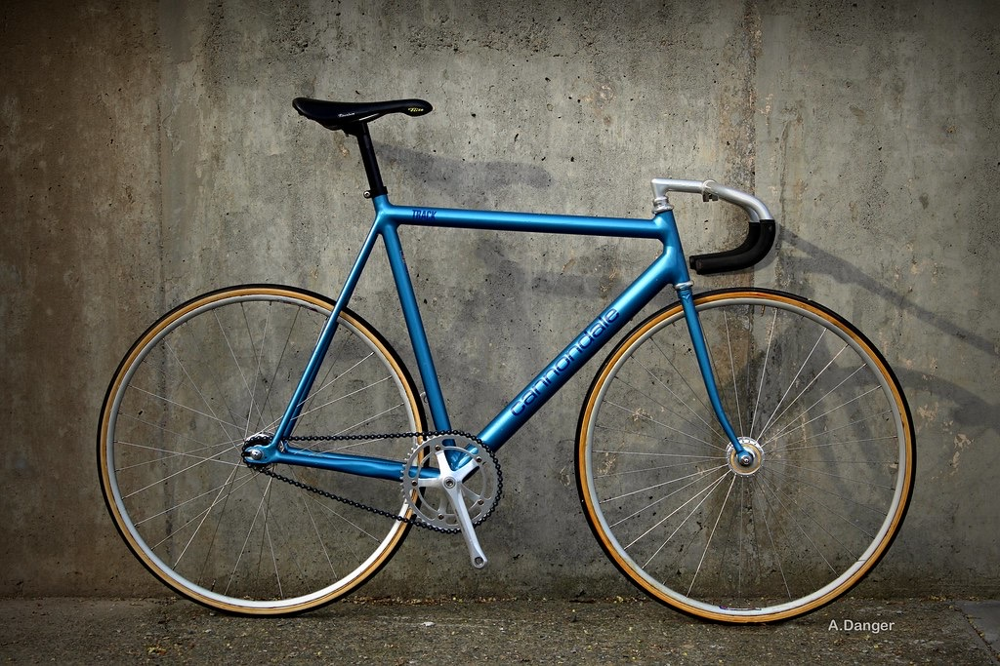

Le Cannondale Track 1992

Le Cannondale Track est un cadre de piste produit par la société Cannondale, basée aux USA.
les éléments suivants le rendent iconique :
- Sa couleur bleue
- ses lignes épurées
Article sur le Cannondale Track
Présentation du cadre
Montage
Historique
Succès
Autres photos